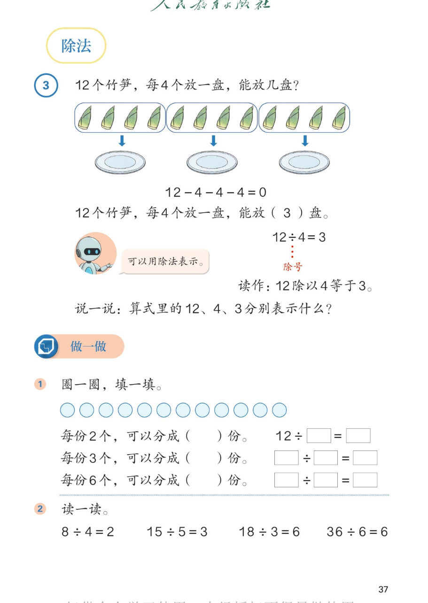

🔊 1~6的表内除法 · 课本第 37 页 · 除法（认识除号）
人教版《数学》二年级上册 · 有声图文带读 · 先想后看解析
题数
6
认知
2
强化
3
拓展
1
本页重点
认识除号·除法算式与读法·三种圈法
🎧 分两步学：
① 解析教材图片
——纯声音读图，读到哪一块哪一块闪动提示；关键处先倒计时让你思考，再在图片下方给出解析并朗读。
② 分层提问练习
——六道分层题（认知 / 强化 / 拓展），先思考再展开解析、朗读参考答案；这一步不再回到图片。
也可以随时点任意一句话、图上任意一块单独听；点课本文字卡还会展开答案。
教材图片（点块听读，读到哪块哪块闪）

📖 人教版《数学》二年级上册 · 课本第 37 页 除法 · 图片仅供个人学习，版权归人民教育出版社所有
🤔 想一想（点我可跳过）
课本的文字（点句子：听读 + 看答案）
课本例 3
12 个竹笋每 4 个放一盘 → 12÷4=3
看答案 ▾
12－4－4－4＝0，减了
3
次，正好放完 → 能放
3
盘。
写成除法：
12÷4＝3
。
12 是竹笋总数，4 是每盘放 4 个，3 是放 3 盘。
课本 · 除号与读法
"÷"叫除号 · 读作"12 除以 4 等于 3"
看答案 ▾
÷
叫
除号
，表示
平均分
。
12÷4＝3 读作：
12 除以 4 等于 3
。
🌈 读算式时，"÷"要读作"除以"，不读"除"
课本做一做 1
12 个圆片：每份 2 个 / 3 个 / 6 个，各分几份？
看答案 ▾
每份 2 个 → 分成
6
份：
12÷2＝6
；
每份 3 个 → 分成
4
份：
12÷3＝4
；
每份 6 个 → 分成
2
份：
12÷6＝2
。
课本做一做 2
读一读：8÷4=2 15÷5=3 18÷3=6 36÷6=6
看答案 ▾
8÷4＝2
读作：8 除以 4 等于 2；
15÷5＝3
读作：15 除以 5 等于 3；
18÷3＝6
读作：18 除以 3 等于 6；
36÷6＝6
读作：36 除以 6 等于 6。
分层提问练习（先想后看解析）
🎍
认知
12 个竹笋每 4 个放一盘，能放几盘？怎么用算式表示？
看解析
🤔 想一想
解析：
能放
3
盘：12－4－4－4＝0，减了 3 次。
用除法表示：
12÷4＝3
。
➗
认知
12÷4=3 怎么读？中间的符号叫什么？
看解析
🤔 想一想
解析：
读作：
12 除以 4 等于 3
。
"÷"叫
除号
，表示
平均分
。
🔢
强化
说一说：算式 12÷4=3 里的 12、4、3 分别表示什么？
看解析
🤔 想一想
解析：
12
：一共有 12 个竹笋（要分的总数）；
4
：每 4 个放一盘（每份的个数）；
3
：能放 3 盘（份数）。
⭕
强化
12 个圆片每份 3 个，可以分成几份？列出除法算式。
看解析
🤔 想一想
解析：
分成
4
份：想 3×4=12。
除法算式：
12÷3＝4
。
🗣️
强化
读一读：15÷5=3 和 36÷6=6。
看解析
🤔 想一想
解析：
15÷5＝3
读作：15 除以 5 等于 3。
36÷6＝6
读作：36 除以 6 等于 6。
💡 36÷6=6 里有两个 6：一个是要分的总数，一个是每份的个数，意思不一样
🌈
拓展
同样 12 个圆片，每份 2 个分 6 份，每份 6 个只分 2 份。你发现了什么？
看解析
🤔 想一想
解析：
2×6＝12，6×2＝12：总数都是 12，正好分完。
每份越多，分的份数就越少
；每份越少，份数就越多。
🌈 想乘法口诀：几乘几等于 12，就有一种分法
① 解析教材图片
② 分层提问练习
⏹ 停止
纯声音 + 高亮跟随 · 想好才出解析
← 返回导航